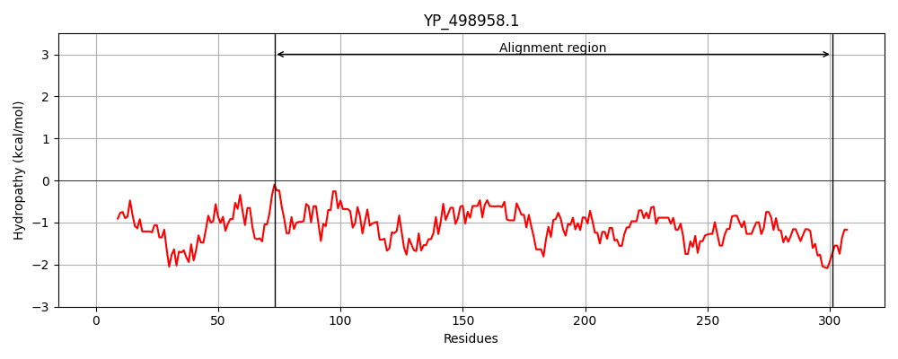
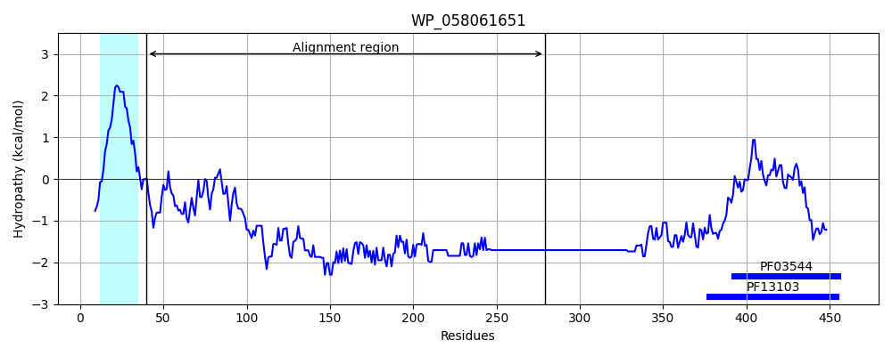
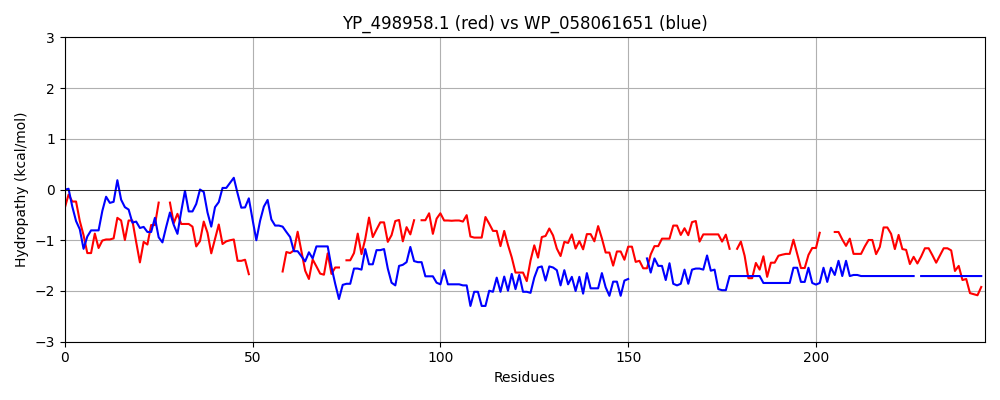

Hit Accession: WP_058061651
Hit TCID: 1.C.1.2.4
Hit Description: gnl|BL_ORD_ID|21251 gnl|TC-DB|WP_058061651.1|1.C.1.2.4 cell envelope integrity protein TolA [Acinetobacter baumannii]
Mach Len: 245
e:0.000000
Query TMS Count : 0
Hit TMS Count: 1
TMS-Overlap Score: 0.000000
Predicted Substrates:None
BLAST Alignment:
Score: 156 , Bit scores: 64 bits, E-value: 1.1e-11, Alignment length: 245, Percentage identity: 27
Query: 73 EKEKDFLQVIVKNDDKNLPTNQNVAQ--LVEDLRLEIQKMREERHLLGQM--------MNQVHQQQQELKELQN-QLTSKIDSNSESLKAIQTS-QEAIQEAQASQAKALAESTNKVEKNAVTEDKADSKDSKVAGVNTSTDAKTDTKAENAGDGTATKVDKEDQISATEAIEKASVE-QSKNDNAAETSNKEATVDAEAQH---DAEQQVAEAHAEASKQATSNDSLEAKAENDSTASQSEMSE 301
E+ K V+VK +D P + V Q + E+ E+ + L + Q+ Q+Q+ ++ Q +L + E+ K Q + Q+ ++EAQ QAKA AE+ K + + +AD+K + A A+T+ + + A K + + EA KA + ++K AAE + ++A DA+A+ D ++ AEA A+A +Q + D+ + KAE D+ A Q + +E
Sbjct: 40 EQPKKLTTVLVKPEDLPPPLAKEVEQPTVAENQAEEVLSPIVDETLPQNLPAAPPPPTAQQLAAQKQKAEQAQQAKLAEEKRKAEEAAKVKQAAEQQRLEEAQKQQAKARAEAEQKRKAEQNAKAEADAKARQKATEEAKRKAETEARLKR----EAQKAENAKLQAQQEAKRKAEADAKAKQQKAAEDAKRKAESDAKAKQQAADNAKRKAEADAKAKQQKAAEDA-KRKAEADAKAKQQKAAE 279 | Protein Hydropathy Plots: |
|---|
|  |  |
Pairwise Alignment-Hydropathy Plot:
|
|---|
|  |